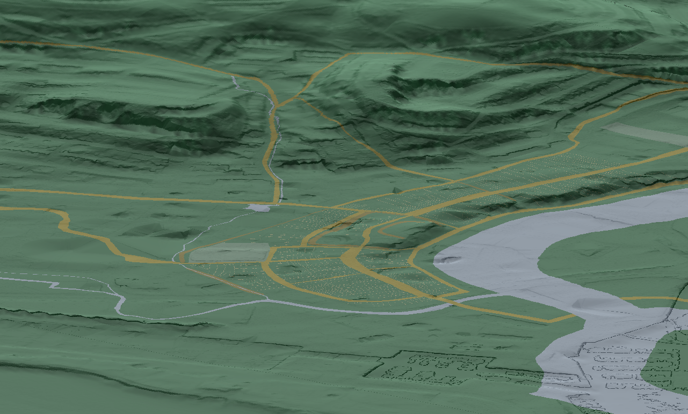
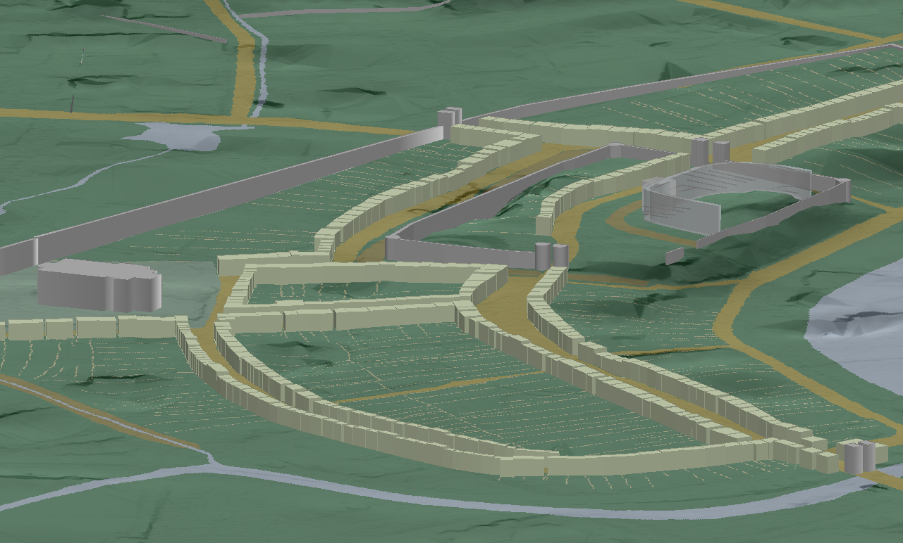
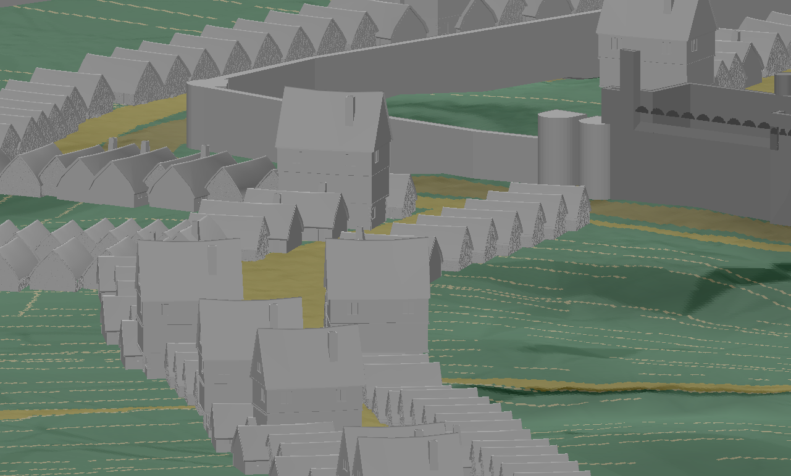

Blog
Creating virtual Swansea
One aspect of the City Witness project that has been the cause of some debate within the team is that of the three dimensional visualisation of the historic townscape. Strong opinions have been voiced with regard to the merits (or otherwise) of aiming for photo realistic visualtions that are very engaging to the public but which include suppositions regarding finer detail in the buildings that may prove problematic to ju.jpgy from the research resources available. The creation of these visualisations also present problems of resources and expertise. The public however have come to expect a certain standard of visual sophistication that may affect their perception of the level of professionalism in the project.
Conversely, representing the town with plain wireframe block buildings is visually unengaging and risks oversimplifying the scene. Variation in the buildings permits the viewer to more easily to anchor themselves in the scene in a more natural way. What then is the best way to provide an engaging visualisation, rigourously prepared, whilst clearly showing that the detail is indicative?
The purpose of visualisation in this project is to recreate the various viewpoints of the witnesses in order to better understand and validate their statements; there is no stated intention to recreate the ambience of medieval Swansea.
Courtesy of the Geomatics Group, we have had access to high quality terrain models which allow us to present the hills around the town and provide accurate vistas across the landscape and town. It can be reasonably assumed that the topography of the higher ground has not changed significantly in the last few hundred years, but closer to the city around the docks particularly, the terrain is has been extensively modified and the terrain models we have are littered with modern artefacts such as building footprints. Even on the hills that we hope are topographically unchanging, would there have been large wooded areas? Obviously this would have implications for lines of sight of some of the witnesses. The highest quality LiDAR terrain data is not particularly extensive as the Environment Agency data collection is focused, by necessity, on areas with a high risk of flood impact which are generally heavily built up, more populated and less elevated. In order to create a more extensive coverage, without sacrificing the high quality data, it is necesarry to combine terrain models of differing resolutions.
The creation of the visualisation then presents us with many technical problems and potential sources of innacuracy.
Putting aside the visualistion of the buildings for a moment let's deal with the physical landscape to give ourselves an area to build on.
In order to make the best use of the terrain data available several processing steps were undertaken.
Two sets of LiDAR were supplied to the project at 50cm and 2m resolutions. The 50cm data contained large areas of "no data" in the hills to the northwest of Swansea. Using tools from the GDAL library the 2m data which was more extensive was resampled and merged with the 50cm data. The resulting simplification in outlying areas would be almost imperceptible in the output.
The new coverage then had a hill shade effect applied. A separate slope intensity image was created and a third image of the same area was processed by applying a hypsometric tint, graduating from a dark green hue through to lighter shades at higher elevations.
Using ImageMagick blend operations, these three images were composited to create an effective representation of the terrain.
This image was opened in ESRI ArcScene and draped over the original terrain data:

From this starting point the various vector layers gathered by the project could be placed in the scene. Polygon layers were added and their base heights were adjusted according to the underlying terrain data:

Some of the vectors didn't need to be extruded but should always be present in the scene such as the historic streets. A problem became evident in that these vectors could only be draped over the terrain so far as the frequency of the points allowed. For example, over a given distance, the terrain could show extensive variation whilst over the same distance, only two or three points had been required during digitisation to record the vector. This had the undesirable effect of making the street disappear underneath the terrain.
To deal with this issue, we went back a stage and actually burnt or branded the vector shapes as raster images into the hypsometric tint and re-composited the images. This had the additional benefit that the hill shade and slope effects would be seen clearly in the rasterised vectors.
Returning to the representation of buildings, the first simplistic approach considered to introduce some variation to the buildings was to vary the height of the structure within a reasonable range. Based on the idea that narrow buildings should be taller than wide ones a formula was posited that took an arbitrary average building height of 5m and adjusted it according to the shape index of the polygon; a measure that attempts to qua.jpgy the degree to which a 2D shape approaches circularity.
The render times for this approach in ArcScene were acceptable owing to there being very little detail in the buildings.
In an attempt to incrementally add building details that might provide a more engaging scene without comprising the integrity of the research another approach used was to use several 3rd party 3D models of medieval buildings to demonstrate variety.
Effectively, in GIS terms, this would be symbology by categorisation. It would be necessary to return to the building data and add attributes which would impart something about the affluence of the street. Again this process would be largely arbitrary, but informed by detailed investigation. Certain central streets were supposed then to be relatively more affluent and more likely to have buildings with multiple stories, as were the buildings within the castle walls. On the edges of the town it was far more likely that the buildings would have been single storied, squat and altogether more humble.
To achieve this visualisation, a new layer of points derived from the building centroids was created. An attribute was added that described the orientation of the building in relation to the street, and finally the buildings were categorised into three types, and a symbology was applied which represented each building according to its category and rotated the model appropriately.
This provided a far more pleasing visualisation but the render times were severely impacted by the addition of large volumes of fine detail which frequently caused ArcScene to crash. Also, the detail in the buildings was in marked contrast to the lack of detail present in the simple extruded vectors of the castle, town walls and gates.
A good compromise was to remove coloured textures from the buildings.

So we have an acceptable visualisation for our purposes. It's hardly Industrial Light and Magic, but neither should it be.
Bringing this effectively to a wider audience is the next issue we need to address.